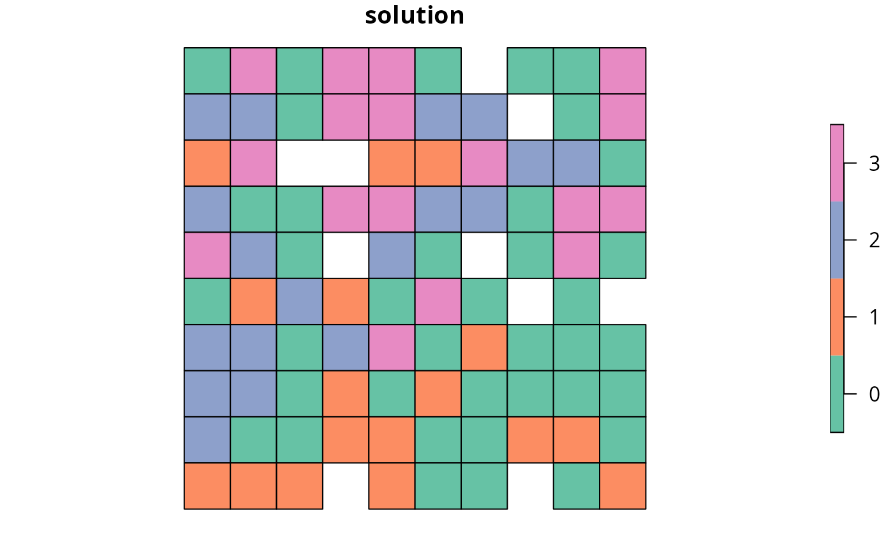
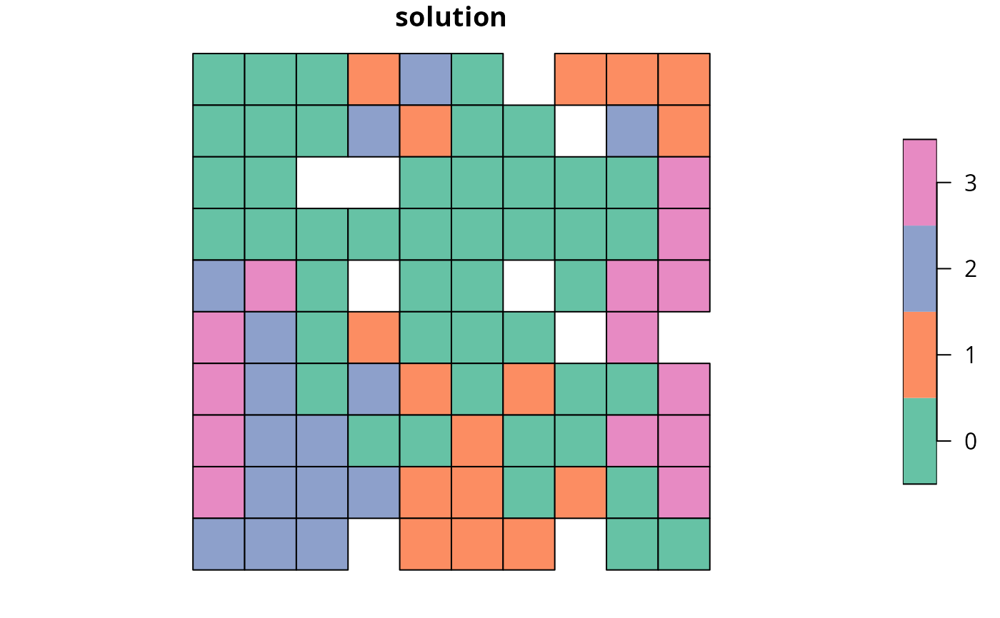

Calculate the connectivity held within a solution to a conservation
planning problem().
This summary statistic evaluates the connectivity of a solution using
pair-wise connectivity values between combinations of planning units.
# S4 method for ConservationProblem,ANY,ANY,matrix eval_connectivity_summary(x, solution, zones, data) # S4 method for ConservationProblem,ANY,ANY,Matrix eval_connectivity_summary(x, solution, zones, data) # S4 method for ConservationProblem,ANY,ANY,data.frame eval_connectivity_summary(x, solution, zones, data) # S4 method for ConservationProblem,ANY,ANY,dgCMatrix eval_connectivity_summary(x, solution, zones, data) # S4 method for ConservationProblem,ANY,ANY,array eval_connectivity_summary(x, solution, zones, data)
| x |
|
|---|---|
| solution |
|
| zones |
|
| data |
|
tibble::tibble() object describing the connectivity of the
solution.
It contains the following columns:
character description of the summary statistic.
The statistic associated with the "overall" value
in this column is calculated using the entire solution
(including all management zones if there are multiple zones).
If multiple management zones are present, then summary statistics
are also provided for each zone separately
(indicated using zone names).
numeric connectivity value.
Greater values correspond to solutions associated with greater
connectivity.
Thus conservation planning exercises typically prefer solutions
with greater values.
This summary statistic is comparable to theConnectivity_Inmetric reported by the [*Marxan* software](https://marxansolutions.org) (Ball *et al.* 2009). It is calculated using the same equations used to penalize solutions with connectivity data (i.e. [add_connectivity_penalties()]). Specifically, it is calculated as the sum of the pair-wise connectivity values in the argument todata`, weighted by the value of the planning
units in the solution.
Broadly speaking, the argument to solution must be in the same format as
the planning unit data in the argument to x.
Further details on the correct format are listed separately
for each of the different planning unit data formats:
x has numeric planning unitsThe argument to solution must be a
numeric vector with each element corresponding to a different planning
unit. It should have the same number of planning units as those
in the argument to x. Additionally, any planning units missing
cost (NA) values should also have missing (NA) values in the
argument to solution.
x has matrix planning unitsThe argument to solution must be a
matrix vector with each row corresponding to a different planning
unit, and each column correspond to a different management zone.
It should have the same number of planning units and zones
as those in the argument to x. Additionally, any planning units
missing cost (NA) values for a particular zone should also have a
missing (NA) values in the argument to solution.
x has Raster planning unitsThe argument to solution
be a Raster object where different grid cells (pixels) correspond
to different planning units and layers correspond to
a different management zones. It should have the same dimensionality
(rows, columns, layers), resolution, extent, and coordinate reference
system as the planning units in the argument to x. Additionally,
any planning units missing cost (NA) values for a particular zone
should also have missing (NA) values in the argument to solution.
x has data.frame planning unitsThe argument to solution must
be a data.frame with each column corresponding to a different zone,
each row corresponding to a different planning unit, and cell values
corresponding to the solution value. This means that if a data.frame
object containing the solution also contains additional columns, then
these columns will need to be subsetted prior to using this function
(see below for example with sf::sf() data).
Additionally, any planning units missing cost
(NA) values for a particular zone should also have missing (NA)
values in the argument to solution.
x has Spatial planning unitsThe argument to solution
must be a Spatial object with each column corresponding to a
different zone, each row corresponding to a different planning unit, and
cell values corresponding to the solution value. This means that if the
Spatial object containing the solution also contains additional
columns, then these columns will need to be subsetted prior to using this
function (see below for example with sf::sf() data).
Additionally, the argument to solution must also have the same
coordinate reference system as the planning unit data.
Furthermore, any planning units missing cost
(NA) values for a particular zone should also have missing (NA)
values in the argument to solution.
x has sf::sf() planning unitsThe argument to solution must be
a sf::sf() object with each column corresponding to a different
zone, each row corresponding to a different planning unit, and cell values
corresponding to the solution value. This means that if the
sf::sf() object containing the solution also contains additional
columns, then these columns will need to be subsetted prior to using this
function (see below for example).
Additionally, the argument to solution must also have the same
coordinate reference system as the planning unit data.
Furthermore, any planning units missing cost
(NA) values for a particular zone should also have missing (NA)
values in the argument to solution.
The argument to data can be specified using several different formats.
These formats can be used to describe symmetric or
asymmetric relationships between planning units.
matrix, Matrixwhere rows and columns represent
different planning units and the value of each cell represents the
strength of connectivity between two different planning units. Cells
that occur along the matrix diagonal are treated as weights which
indicate that planning units are more desirable in the solution.
The argument to zones can be used to control
the strength of connectivity between planning units in different zones.
The default argument for zones is to treat planning units
allocated to different zones as having zero connectivity.
data.framecontaining the fields (columns)
"id1", "id2", and "boundary". Here, each row
denotes the connectivity between two planning units following the
Marxan format. The data can be used to denote symmetric or
asymmetric relationships between planning units. By default,
input data is assumed to be symmetric unless asymmetric data is
also included (e.g. if data is present for planning units 2 and 3, then
the same amount of connectivity is expected for planning units 3 and 2,
unless connectivity data is also provided for planning units 3 and 2).
If the argument to x contains multiple zones, then the columns
"zone1" and "zone2" can optionally be provided to manually
specify the connectivity values between planning units when they are
allocated to specific zones. If the columns "zone1" and
"zone2" are present, then the argument to zones must be
NULL.
arraycontaining four-dimensions where cell values
indicate the strength of connectivity between planning units
when they are assigned to specific management zones. The first two
dimensions (i.e. rows and columns) indicate the strength of
connectivity between different planning units and the second two
dimensions indicate the different management zones. Thus
the data[1, 2, 3, 4] indicates the strength of
connectivity between planning unit 1 and planning unit 2 when planning
unit 1 is assigned to zone 3 and planning unit 2 is assigned to zone 4.
Ball IR, Possingham HP, and Watts M (2009) Marxan and relatives: Software for spatial conservation prioritisation in Spatial conservation prioritisation: Quantitative methods and computational tools. Eds Moilanen A, Wilson KA, and Possingham HP. Oxford University Press, Oxford, UK.
# \dontrun{ # set seed for reproducibility set.seed(500) # load data data(sim_pu_raster, sim_pu_sf, sim_features, sim_pu_zones_sf, sim_features_zones) # build minimal conservation problem with raster data p1 <- problem(sim_pu_raster, sim_features) %>% add_min_set_objective() %>% add_relative_targets(0.1) %>% add_binary_decisions() %>% add_default_solver(verbose = FALSE) # solve the problem s1 <- solve(p1) # print solution print(s1)#> class : RasterLayer #> dimensions : 10, 10, 100 (nrow, ncol, ncell) #> resolution : 0.1, 0.1 (x, y) #> extent : 0, 1, 0, 1 (xmin, xmax, ymin, ymax) #> crs : NA #> source : memory #> names : layer #> values : 0, 1 (min, max) #># simulate a connectivity matrix to describe the relative strength # of connectivity between different planning units # for brevity, we will use cost data here so that pairs # of adjacent planning units with higher cost values will have a # higher connectivity value # (but see ?connectivity_matrix for more information) cm1 <- connectivity_matrix(sim_pu_raster, sim_pu_raster) # calculate connectivity associated with the solution r1 <- eval_connectivity_summary(p1, s1, data = cm1) print(r1)#> # A tibble: 1 x 2 #> summary connectivity #> <chr> <dbl> #> 1 overall 198.# build minimal conservation problem with polygon (sf) data p2 <- problem(sim_pu_sf, sim_features, cost_column = "cost") %>% add_min_set_objective() %>% add_relative_targets(0.1) %>% add_binary_decisions() %>% add_default_solver(verbose = FALSE) # solve the problem s2 <- solve(p2) # print first six rows of the attribute table print(head(s2))#> Simple feature collection with 6 features and 4 fields #> Geometry type: POLYGON #> Dimension: XY #> Bounding box: xmin: 0 ymin: 0.9 xmax: 0.6 ymax: 1 #> CRS: NA #> cost locked_in locked_out solution_1 geometry #> 1 215.8638 FALSE FALSE 0 POLYGON ((0 1, 0.1 1, 0.1 0... #> 2 212.7823 FALSE FALSE 0 POLYGON ((0.1 1, 0.2 1, 0.2... #> 3 207.4962 FALSE FALSE 0 POLYGON ((0.2 1, 0.3 1, 0.3... #> 4 208.9322 FALSE TRUE 0 POLYGON ((0.3 1, 0.4 1, 0.4... #> 5 214.0419 FALSE FALSE 0 POLYGON ((0.4 1, 0.5 1, 0.5... #> 6 213.7636 FALSE FALSE 0 POLYGON ((0.5 1, 0.6 1, 0.6...# simulate connectivity matrix # here, we will generate connectivity values randomly # between all pairs of planning units cm2 <- matrix(runif(nrow(sim_pu_sf) ^ 2), nrow = nrow(sim_pu_sf)) # calculate connectivity associated with the solution r2 <- eval_connectivity_summary(p2, s2[, "solution_1"], data = cm2) print(r2)#> # A tibble: 1 x 2 #> summary connectivity #> <chr> <dbl> #> 1 overall 36.8# build multi-zone conservation problem with polygon (sf) data p3 <- problem(sim_pu_zones_sf, sim_features_zones, cost_column = c("cost_1", "cost_2", "cost_3")) %>% add_min_set_objective() %>% add_relative_targets(matrix(runif(15, 0.1, 0.2), nrow = 5, ncol = 3)) %>% add_binary_decisions() %>% add_default_solver(verbose = FALSE) # solve the problem s3 <- solve(p3) # print first six rows of the attribute table print(head(s3))#> Simple feature collection with 6 features and 9 fields #> Geometry type: POLYGON #> Dimension: XY #> Bounding box: xmin: 0 ymin: 0.9 xmax: 0.6 ymax: 1 #> CRS: NA #> cost_1 cost_2 cost_3 locked_1 locked_2 locked_3 solution_1_zone_1 #> 1 215.8638 183.3344 205.4113 FALSE FALSE FALSE 0 #> 2 212.7823 189.4978 209.6404 FALSE FALSE FALSE 0 #> 3 207.4962 193.6007 215.4212 TRUE FALSE FALSE 0 #> 4 208.9322 197.5897 218.5241 FALSE FALSE FALSE 1 #> 5 214.0419 199.8033 220.7100 FALSE FALSE FALSE 0 #> 6 213.7636 203.1867 224.6809 FALSE FALSE FALSE 0 #> solution_1_zone_2 solution_1_zone_3 geometry #> 1 0 0 POLYGON ((0 1, 0.1 1, 0.1 0... #> 2 0 0 POLYGON ((0.1 1, 0.2 1, 0.2... #> 3 0 0 POLYGON ((0.2 1, 0.3 1, 0.3... #> 4 0 0 POLYGON ((0.3 1, 0.4 1, 0.4... #> 5 1 0 POLYGON ((0.4 1, 0.5 1, 0.5... #> 6 0 0 POLYGON ((0.5 1, 0.6 1, 0.6...# create new column representing the zone id that each planning unit # was allocated to in the solution s3$solution <- category_vector( s3[, c("solution_1_zone_1", "solution_1_zone_2", "solution_1_zone_3")]) s3$solution <- factor(s3$solution) # plot solution plot(s3[, "solution"])# simulate connectivity matrix # here, we will add a new column to sim_pu_zones_sf with # randomly simulated values and create a connectivity matrix # based on the average simulated values of adjacent planning units sim_pu_zones_sf$con <- runif(nrow(sim_pu_zones_sf)) cm3 <- connectivity_matrix(sim_pu_zones_sf, "con") # calculate connectivity associated with the solution r3 <- eval_connectivity_summary( p3, s3[, c("solution_1_zone_1", "solution_1_zone_2", "solution_1_zone_3")], data = cm3) print(r3)#> # A tibble: 4 x 2 #> summary connectivity #> <chr> <dbl> #> 1 overall 3.12 #> 2 zone_1 1.26 #> 3 zone_2 0.851 #> 4 zone_3 1.00# }